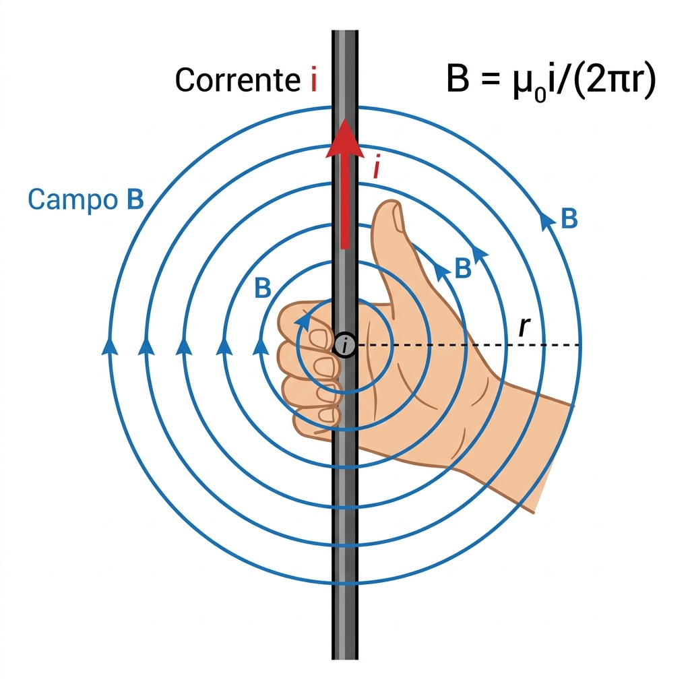
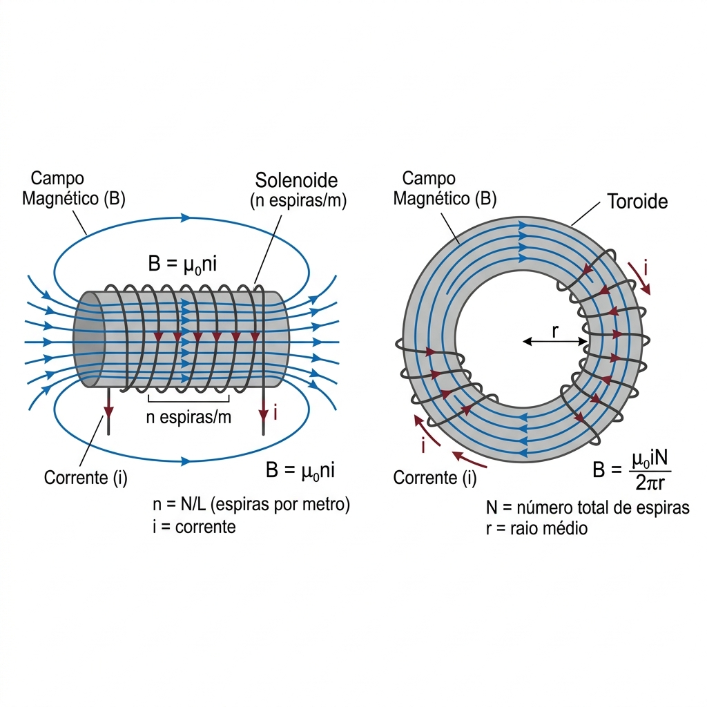
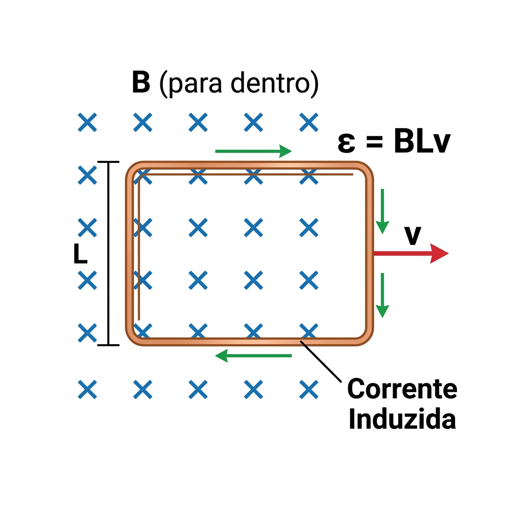

Campos Magnéticos
Fios, Espiras, Solenoides & Toroides
Cargas em movimento (correntes) gerando campos magnéticos.


Fio Longo e Reto
B = (μ0 · i) / (2π r)
Campo circular ao redor do fio. Use a regra da mão direita.
μ0 4π×10−7 T·m/A
i Corrente (A)
r Distância do fio (m)
Força entre 2 Fios Paralelos
F/L = (μ0 · i1 · i2) / (2π d)
Mesmo sentido = Atraem
Opostos = Repelem
Espira Circular (centro)
B = (μ0 · i) / (2R)
Se for meia espira: divida por 2.
Solenoide Ideal
B = μ0 · n · i
n = N/L (espiras por metro). Campo uniforme no interior.
Toroide
B = (μ0 · i · N) / (2π r)
Campo confinado dentro. Não é uniforme — depende de r.
🧭 Regra da Mão Direita
Polegar: Sentido da Corrente (i)
Dedos a envolver: Sentido de B
Produto vetorial: Dedos apontam ds⃗, fecham para r̂, polegar = dB⃗.
Indução Eletromagnética
Faraday, Lenz & FEM de Movimento
Campos magnéticos que variam no tempo criam voltagem.

Fluxo Magnético
ΦB = B · A · cos(θ)
Unidade: Weber (Wb). Forma geral: ∫ B⃗·dA⃗
Lei de Faraday & Lenz ⭐
ε = −N · dΦB/dt
O sinal (−) é a Lei de Lenz: a tensão se opõe à variação.
FEM de Movimento (Barra em Trilhos)
|ε| = B · L · v
B Campo magnético (T)
L Comprimento da barra (m)
v Velocidade da barra (m/s)
⚡ Checklist Indução
- O que está a mudar? (B, A, ou θ?)
- Escreva ΦB em função de t
- Derive: dΦ/dt
- Multiplique por −N
- Lei de Lenz: sentido da corrente